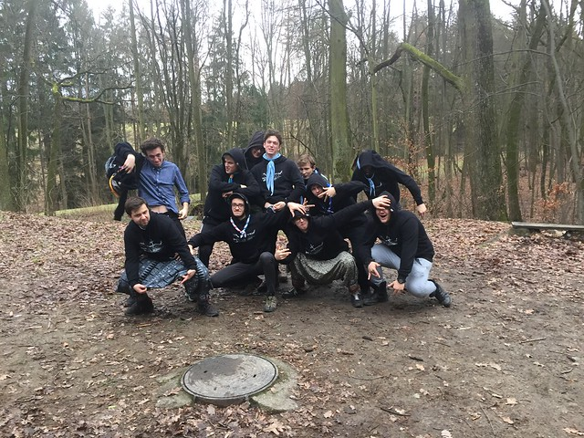

Toulavá smečka & Bárka
21. září 2026
Zahajovací výprava v Terčině údolí
Od pátku do neděle jsme byli na vlčácké výpravě na Švýcarské Chatě v Terčině údolí, kde se vlčácká paluba rozloučila s nejstaršími vlčáky, kteří posléze přešli do skautské paluby. Výprava byla stylizována do tématu záchrany dvou mimozemšťanů, kteří přistáli na Zemi. Večer jsme navíc měli interaktivní program o Helen Kellerové.